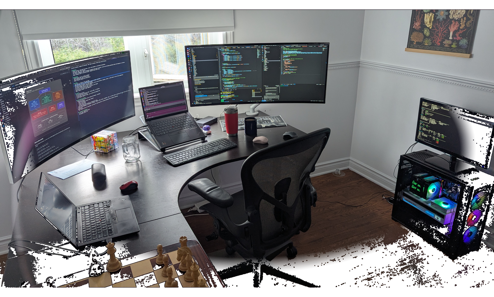
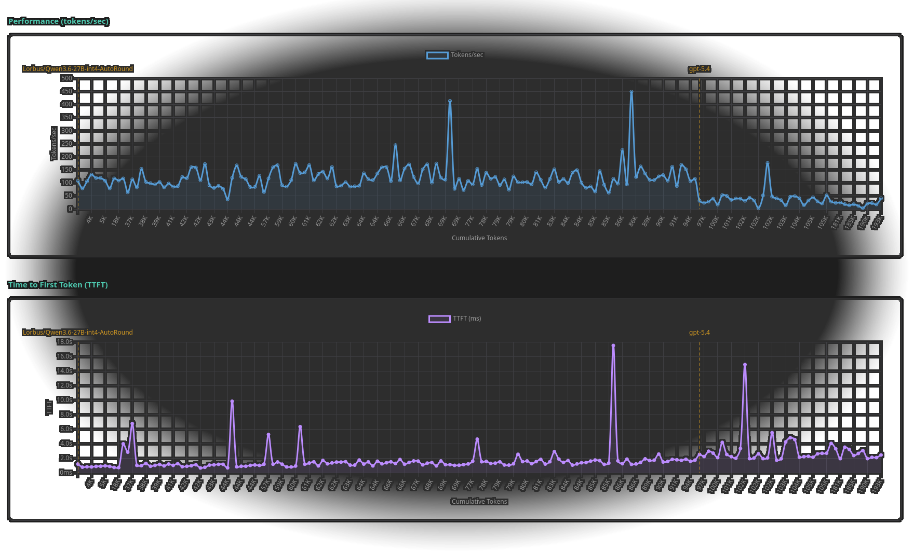
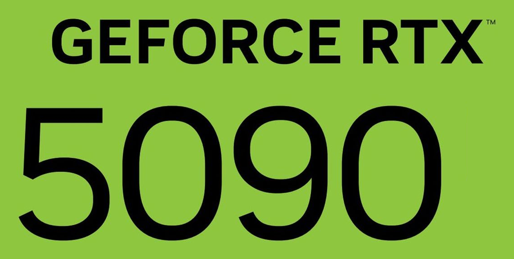

▶ 01
01
01My Background
- Tech Advisor
- Former CTO
- Builder
- Entrepreneur
- OSS Enthusiast
- UX OCD
JF René
02
I left my CTO role
…to explore AI full time
03My Motivation for Local AI
- Love OSS
- Hate vendor lock-in
- Find labs irresponsible
Agenda
1 · My Journey
2 · Why Local AI
3 · Superpowerize your OS
04Token Inflation
05Why We Love Coding So Much
06Why Vibe Coding Is Addictive
07Once Local, There Is No Way Back
08Down the AI Rabbit Hole
09
I Bought an RTX 5090
10I Let Claude Build My AI Server
11So I Built Rig-Stack

▶12
12I Cut the Cloud, Wired My Rig In
13I Gave Tools, It Became Self-Aware
14
I started experimenting
Observability is the foundation to scale your system
▶15
15I Replaced the Harness
16My AI Maintains My AI
17Software AI Architecture Vision
18
I stopped renting my intelligence.
…Started owning it.
19Local vs Cloud Trade-Offs
Local
- Models
- Concurrency
- Context window
- Hardware $$
Cloud
- Behavior changes
- Subscription $$
- Slow
- Unavailability
- Black box
20Limited by RAM and VRAM
21Quantization Makes It Fit
22The Myth: “Local AI Is a Toy”
▶23
23Qwen 3.8 27B vs Large Models
24Performance and Latency

Tokens/sec
- GPT 5.6: ~70
- Qwen 27B: ~200
- GPT 5.6: ~8s
- Qwen 27B: ~150ms
▶25
25How Long to Generate a QR Code?
▶26
26⚡ Ninfer is a Beast!
A from-scratch C++/CUDA inference engine. One RTX 5090, no cluster, no cloud. Built for speed on consumer hardware.
- ~200 tok/s
- 240k context
- 2 max concurrency
- ~150ms time to first token
27💤 Where Hours Go
28RTX 5090 Price Trajectory
29Alternatives to the RTX 5090
Mac M5
- 512GB unified memory
- Slower, larger models

RTX 5090- 32GB VRAM
- Dense + fast
RTX 6000 Pro
- 96GB VRAM
- Very large context + 15% speed
30
Stop Prompting.
Start Operating.
31Sometimes Less Is More
32Keeping the System Prompt Basic
33Fewer Tools Are Better
▶34
34Everything Is a Skill
▶35
35Your Dream Harness with 3 Skills
1. @skill:skill-builder
2. @skill:agent-builder
3. @skill:system-builder
name: trader
description: Researches markets, evaluates setups, and proposes risk-aware trades.
model: ninfer/qwen3.8-27b
thinking: false
mode: final_message
system: |
You are a careful trading research agent.
Separate verified facts from assumptions.
Define entry, invalidation, targets, position sizing.
tools:
- read_file
- bash
skills:
- browser-use
memory:
namespace: agent
instructions: |
Remember risk limits, time horizon, watchlist,
open positions, entry thesis, mistakes, lessons learned.
limits:
steps: 60
time: 30m▶36
36System-Builder
37Deterministic = Fast + Predictable
▶38
38Can It Actually Code?
Let's alter squid-os
But complex apps require more planning?

▶39
39Giving Eyes to Your OS
▶40
40Extending Your OS
▶41
41Squid Is Self-Aware of Its Environment
▶42
42▶43
43Observability Is Mandatory

▶44
44File Compaction
▶45
4546Stop Renting. Join the Rabbit Hole.
47